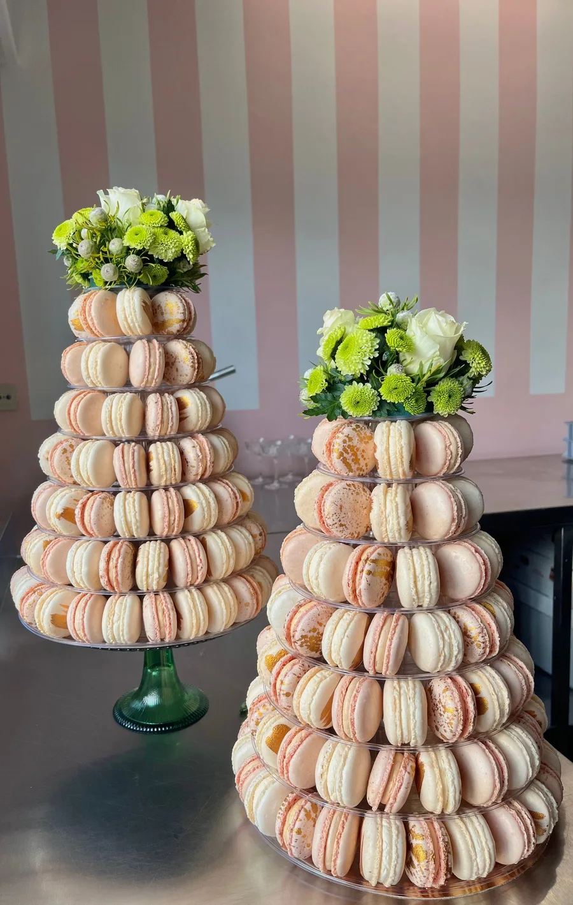
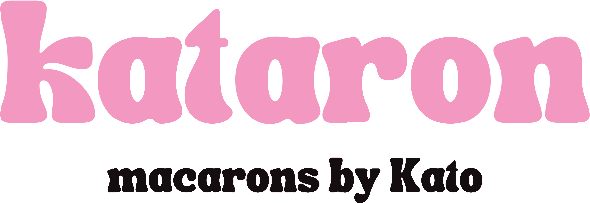
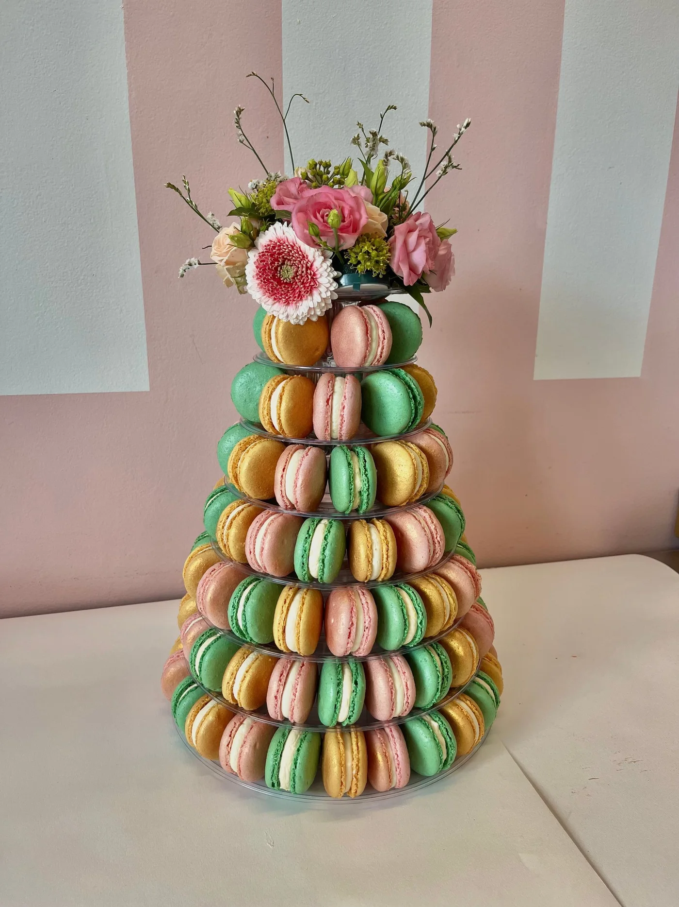
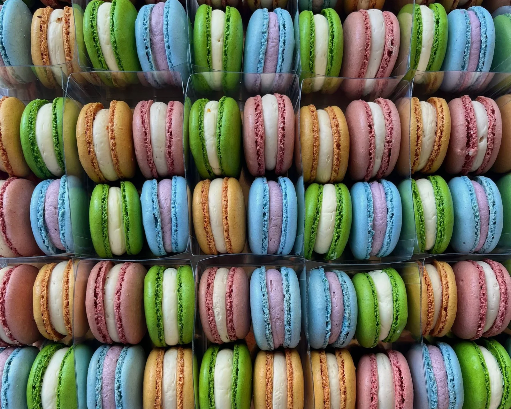
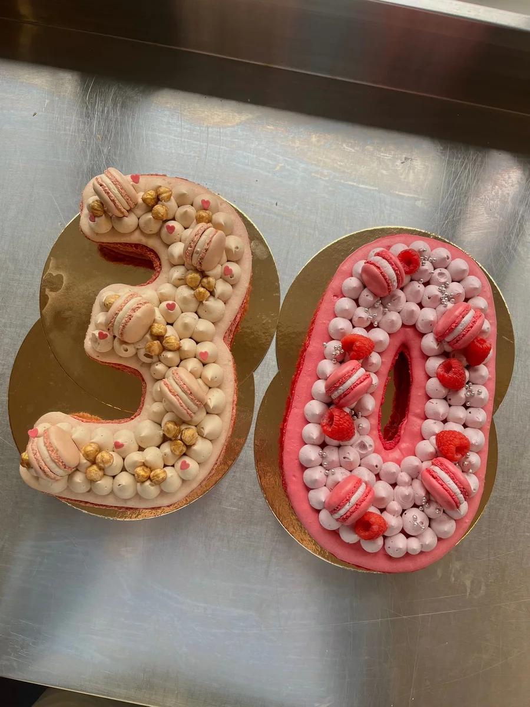
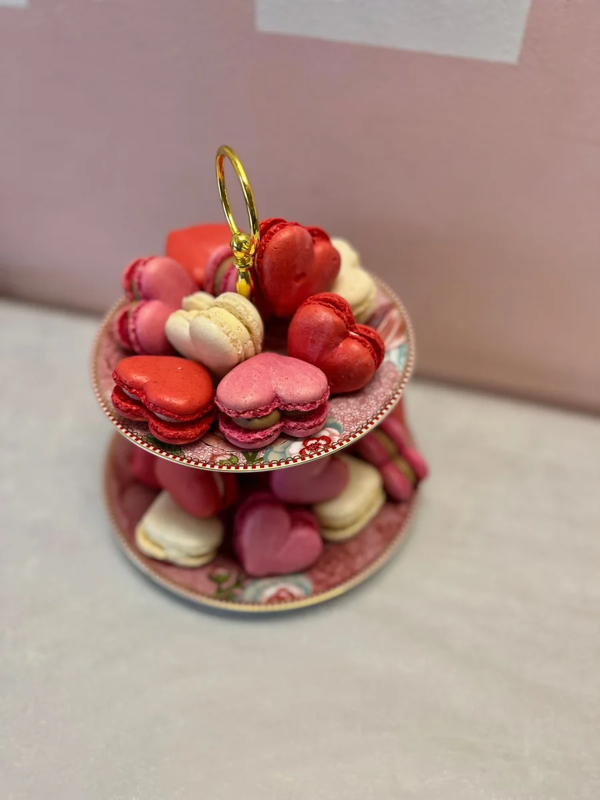
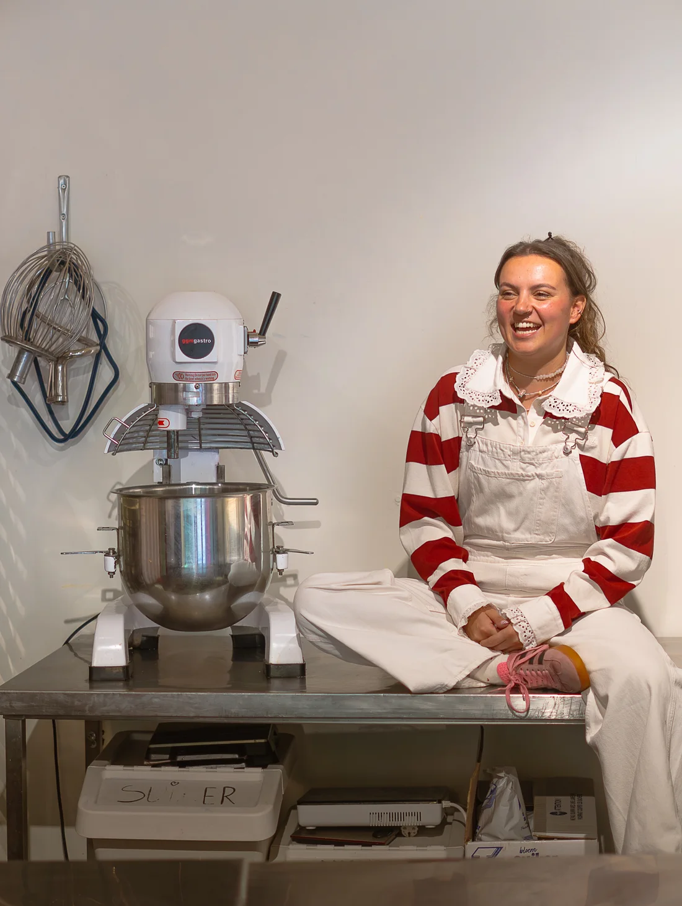
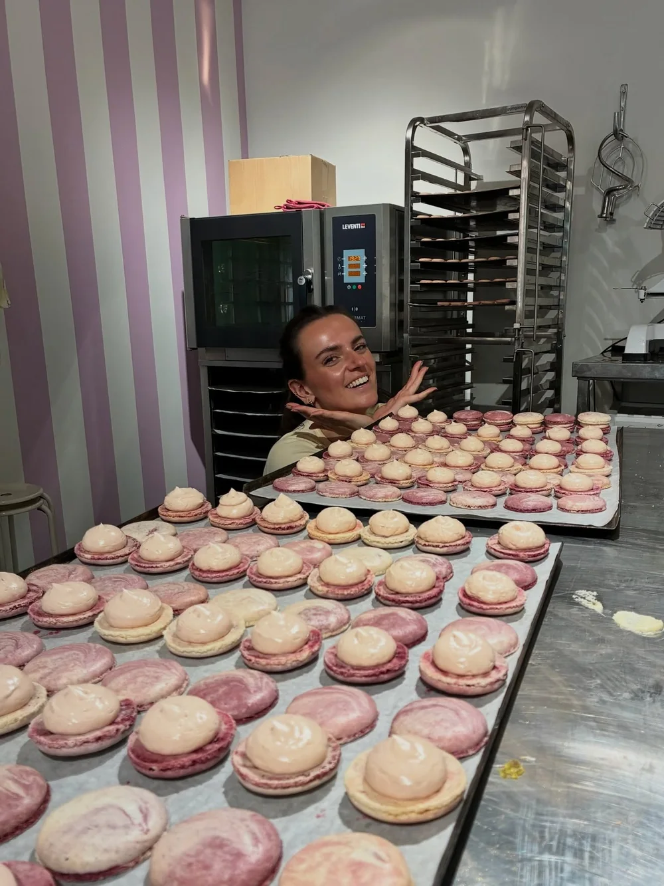
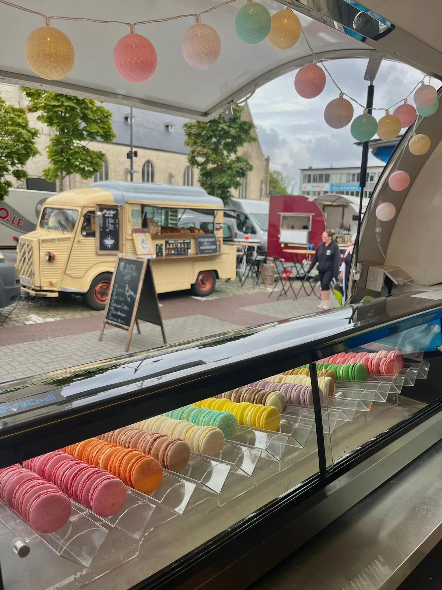
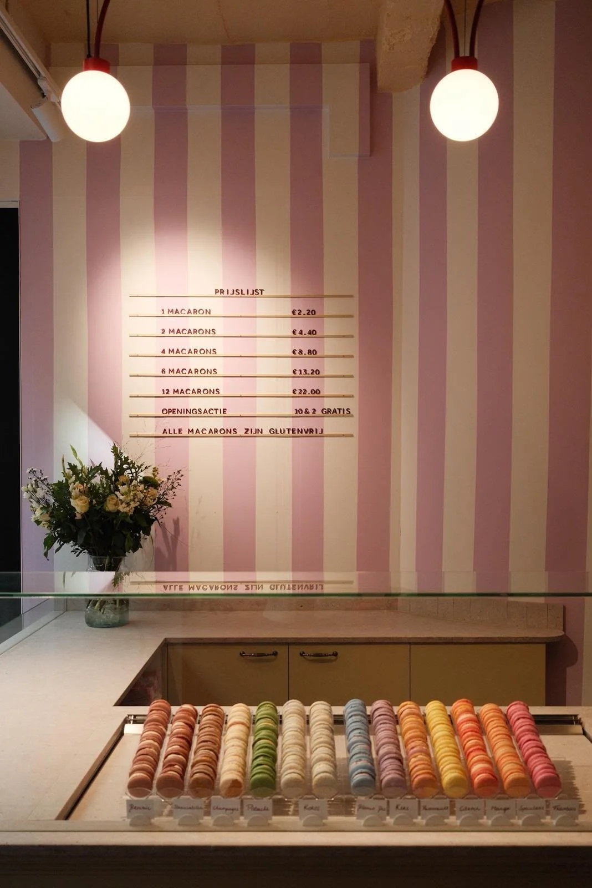

Macarontorens
Voor een trouw of een groot feest, met bloemen bovenop.

Bestel onlineKato bakt ze glutenvrij en in alle kleuren, met elk seizoen een paar nieuwe smaken. Haal ze in onze roze winkel in Leuven, op zaterdag op de markt in Mechelen, of bestel ze online.

Van klassiekers tot verrassende combinaties, en elk seizoen een paar nieuwe. Volgens onze klanten zijn ze ook net iets groter dan elders. Extra genieten dus.

Zoals hij bij ons aan de muur hangt.
Een cijfertaart voor een verjaardag, een toren voor een trouw, of een etagère vol hartjes. Vertel ons wat je wil, we luisteren goed.

Voor een trouw of een groot feest, met bloemen bovenop.

Jouw leeftijd in macarons, room en fruit.

Hartjes, eigen kleuren of een speciale smaak.
Stuur ons een mailtje. Dit helpt ons al een heel eind op weg:
"Ook voor ons trouwfeest hadden we een macarontaart laten maken met bloemstukje vanboven. Ze hebben echt goed naar onze wensen geluisterd en ze waren opnieuw heerlijk!"
Kara SGoogle

Dat is het levensmotto van Kato, die Kataron begon. Een enorme optimist, iemand die amper stress kent en keihard werkt zonder daar veel woorden aan vuil te maken.
Elke maand deelt ze een fotodump uit de bakkerij, met dingen als "90 soezen in 90 min" en een koukske op dinsdag. Fearless, een echte doorzetter.
Je vindt ons niet alleen in de winkel. Met de foodtruck staan we op markten en op privé-events, met een toonbank vol kleur.

"Zonder twijfel de lekkerste macarons!! Je krijgt zowel van de macarons als van de service/bediening de grootste glimlach op je gezicht. Ook altijd ideaal als kleine attentie voor vrienden of familie."
Marijke De CréeGoogle"Super lekkere macarons, met échte smaken, niet artificieel. Ze zijn ook iets groter dan bij andere winkels ofzo, extra genieten."
Julie BlanckaertGoogle"Zeer lekkere macarons. Ook een macaron taart voor mijn verjaardag laten maken die heerlijk was!"
Stef D'haeseleerGoogleLeopold Vanderkelenstraat 3C, 3000 LeuvenZeker zijn van je doosje? Bestel het dan vooraf via de webshop.

Ik maakte deze demo voor jullie om te tonen wat er kan. Na een kort gesprek maak ik er iets veel persoonlijkers van, helemaal naar jullie wens.
Vrijblijvend. Ik kom langs of we bellen.
Op maat, op jullie eigen domein.
Geen voorschot. Jullie betalen pas als alles klaar is.
Hosting, domeinnaam en kleine wijzigingen, zoals nieuwe openingsuren.
Omdat een voorbeeld meer zegt dan een mail. Zo zien jullie meteen wat er kan, en het kost jullie niets.
Nee. Het gesprek is vrijblijvend. Vinden jullie het niks, dan is het daarmee gedaan.
Na ons gesprek staat jullie site binnen 10 tot 14 dagen online.
Zeker. Jullie domeinnaam kan gewoon blijven, de nieuwe site komt in de plaats van de oude.
Nee, dat doe ik op basis van ons gesprek. Eigen foto's zijn mooi meegenomen, maar niet nodig om te starten.